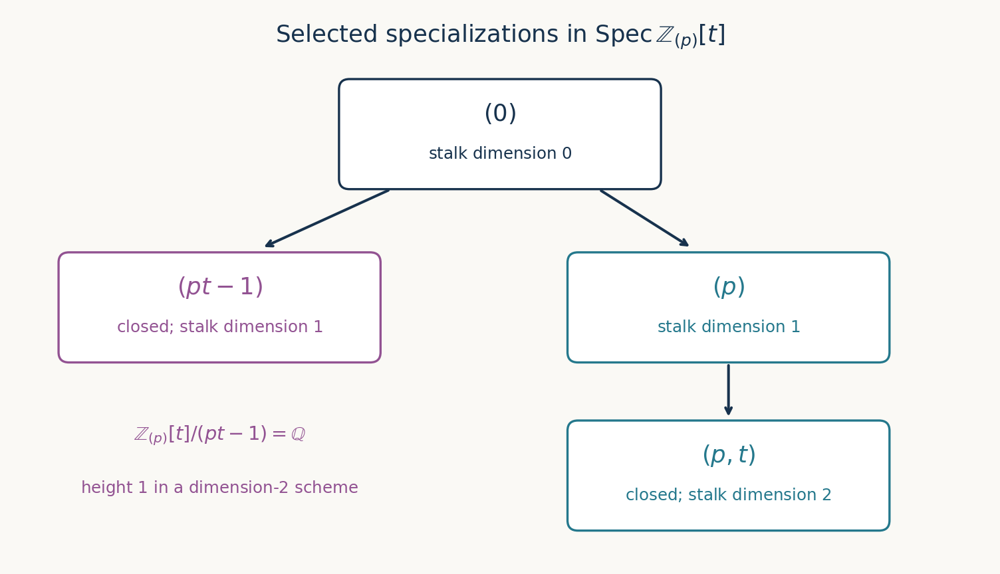

Properties of schemes
Written by OpenAI GPT-6.1 Sol in Codex at Ultra; writing-AI self-check completed. No independent review is claimed. Original exposition, proofs, exercises and figures: CC0.
An affine chart is a place to calculate, but a property of a scheme must survive changing charts. The affine communication lemma explains when one chosen affine cover is enough. We use it for Noetherian schemes, then compare reducedness, integrality, normality and regularity. Finally we distinguish dimension of a space from dimension of a structure-ring stalk: the latter measures chains of generizations of a specified point.
The preceding lessons supply affine charts, sobriety, reduction and closed immersions into affines. The written internal commutative algebra lessons supply the deeper local-ring inputs: Regular local rings, Theorems 1.1, 3.2 and 5.3, and Integral extensions: lying over, going up and going down, Theorem 2.2 on normal domains. These inputs are stated at their point of use below. No separatedness or finite type assumption is imposed on schemes unless stated.
1. Communicating between affine covers
Lemma 1.1 (common distinguished neighbourhoods). If \(U=\operatorname{Spec}A\) and \(V=\operatorname{Spec}B\) are affine opens in a scheme, their intersection is covered by opens distinguished in both \(U\) and \(V\).
Proof. Fix \(x\in U\cap V\). Choose \(D_V(g)\) containing \(x\) and contained in \(U\cap V\), then choose \(D_U(f)\) containing \(x\) and contained in \(D_V(g)\). The function \(f\) restricts to an element of \(\Gamma(D_V(g),\mathcal O)=B_g\), say \(b/g^n\). Its unit locus inside \(D_V(g)\) is \(D_V(gb)\). It is also \(D_U(f)\cap D_V(g)=D_U(f)\), by the containment just chosen. Hence \(D_U(f)=D_V(gb)\), the required common distinguished neighbourhood. \(\square\)
This lemma does not assert that \(U\cap V\) is affine. For example, gluing two affine planes on their punctured planes gives two affine charts with nonaffine intersection, by the punctured-plane calculation in the affine lesson.
Call a ring property \(P\) local for distinguished covers if it is invariant under ring isomorphism and satisfies:
- \(P(R)\) implies \(P(R_f)\) for every \(f\in R\).
- If \((f_1,\ldots,f_n)=R\) and every \(R_{f_i}\) has \(P\), then \(R\) has \(P\).
Theorem 1.2 (affine communication). For such a property, if a scheme has an affine open cover whose rings have \(P\), every affine open has \(P\). Consequently the resulting scheme property is independent of the cover and passes to open subschemes.
Proof. Let \(U=\operatorname{Spec}R\) be any affine open and \((V_i)\) the given cover. Lemma 1.1 covers \(U\) by opens distinguished both in \(U\) and in some \(V_i\). Quasi-compactness of \(U\) selects finitely many, say \(D_U(f_j)\). Their rings are localizations of rings with \(P\), so have \(P\) by condition 1. The \(f_j\) generate the unit ideal because their distinguished opens cover. Condition 2 gives \(P(R)\). Every affine of an open subscheme is an affine open of the original scheme, proving the final assertion. \(\square\)
Reducedness is such a property: it passes to localizations by the proof in the reduction lesson, and a nilpotent element vanishing in every member of a distinguished cover is zero by the finite-cover module detection lemma. Integrality is different: irreducibility includes a condition on the entire space, and two disjoint integral charts need not give an integral scheme.
2. Integral schemes and their function fields
A scheme \(X\) is integral if it is nonempty and the ring of every nonempty affine open is a domain. Recall that an irreducible space is nonempty and has no decomposition into two proper closed subsets. Equivalently, any two nonempty opens intersect.
Theorem 2.1. A scheme is integral if and only if it is reduced and irreducible. On an integral scheme every local ring is a domain, and every nonempty open section ring is a domain. If \(\eta\) is its generic point, then
\[ K(X)=\mathcal O_{X,\eta} \cong\operatorname{Frac}\Gamma(U,\mathcal O_X) \tag{2.1} \]for every nonempty affine open \(U\). This field is the function field. Sections on nonempty opens embed into it, and all restrictions between such opens are injective.
Proof. If \(X\) is reduced and irreducible, any nonempty affine \(U=\operatorname{Spec}R\) is reduced and irreducible. Reducedness means its nilradical is zero; irreducibility means its nilradical is prime, by the generic-point dictionary for spectra. Thus zero is prime and \(R\) is a domain.
Conversely, domains on the affine charts make all stalks reduced, so \(X\) is reduced. Suppose there were disjoint nonempty opens. Choose nonempty affine opens \(U,V\) inside them. Their disjoint union is affine with ring \(\Gamma(U,\mathcal O)\times\Gamma(V,\mathcal O)\): the two-factor spectrum and its sheaf are the disjoint union, as verified in the idempotent example of the preceding functor lesson. This product of two nonzero rings is not a domain, contrary to the integral definition applied to \(U\cup V\). Therefore \(X\) is irreducible.
Sobriety gives a generic point \(\eta\), and it belongs to every nonempty open. In an affine domain chart it corresponds to the zero prime, whose localization is the fraction field. This proves (2.1), canonically through the common stalk. Other stalks are localizations of domains, hence domains.
For a section on a nonempty open \(W\), take its germ at \(\eta\). If that germ is zero, its restriction to every affine \(V\subset W\) has zero image in the domain's fraction field, hence is zero. These affines cover \(W\), so the section is zero. Thus \(\mathcal O_X(W)\) embeds into \(K(X)\), making it a domain. Every restriction commutes with these injections into the same field and is therefore injective. \(\square\)
Example 2.2. Three affine curves illustrate the distinctions.
- \(\operatorname{Spec}k[x]/(x^2)\) has a nonzero nilpotent, hence is not reduced.
- \(\operatorname{Spec}k[x,y]/(xy)\) is reduced by \((x)\cap(y)=(xy)\), but its two axes are distinct components, so it is not integral.
- \(\operatorname{Spec}k[x,y]/(y^2-x^3)\) is integral. Send \(x\mapsto t^2\), \(y\mapsto t^3\). Monic division in \(y\) gives representatives \(a(x)+y b(x)\); their images have disjoint even and odd powers, proving injectivity. Its ring is \(k[t^2,t^3]\), a domain. In its fraction field, \(t=y/x\) is integral since \(t^2=x\), but is absent from this ring. This will give the failure of normality below, over any field.
3. Noetherian schemes
A scheme is locally Noetherian if it has an affine open cover by Noetherian rings. It is Noetherian if it is locally Noetherian and quasi-compact. Thus a Noetherian scheme has a finite such affine cover; the local property alone does not supply a finite cover.
Lemma 3.1. Being Noetherian is a ring property local for distinguished covers.
Proof. Ideals of a localization are extended from their contractions; finite generators of the contraction generate the localized ideal. Thus localization preserves Noetherianness. Conversely suppose \(R_{f_i}\) are Noetherian for a finite unit-ideal cover, and let \(I\subset R\) be an ideal. Choose finite generators of each \(I_{f_i}\), and lift their numerators to elements of \(I\). Let \(J\subset I\) be the ideal generated by the finite union of these numerators. Then \((I/J)_{f_i}=0\) for every \(i\). The localization detection argument in the affine lesson's Lemma 1.1 gives \(I/J=0\), so \(I\) is finitely generated. Every ideal is therefore finite, equivalent to Noetherianness. \(\square\)
Theorem 3.2. A scheme is locally Noetherian if and only if every affine open is the spectrum of a Noetherian ring. A Noetherian scheme has a Noetherian underlying topological space. Open and closed subschemes of a locally Noetherian scheme are locally Noetherian; the same holds for locally closed subschemes. Subschemes of these types in a Noetherian scheme are Noetherian.
Proof. The first assertion follows from Lemma 3.1 and affine communication. For a Noetherian ring, a descending chain of closed subsets of its spectrum gives an ascending chain of radical ideals, which stabilizes. Thus its spectrum is a Noetherian space. Restrict a descending chain of closed sets of a Noetherian scheme to each member of a finite affine Noetherian cover. Each restricted chain stabilizes, so choosing the maximum of the finitely many indices makes the whole chain stabilize. This proves the topological assertion.
An open subscheme inherits the local property by Theorem 1.2. A closed subscheme restricted to any affine Noetherian target chart is \(\operatorname{Spec}(R/I)\) by the closed-immersion theorem; this quotient is Noetherian, since its ideals are quotients of ideals containing \(I\). The inverse-image charts cover it. Combining the two cases treats locally closed subschemes.
Every subset of a Noetherian space is Noetherian in the subspace topology. For instance, an ascending sequence of opens in the subspace can be expressed using ascending unions of corresponding ambient opens, which stabilize. Every open cover of a Noetherian space has a finite subcover: otherwise successively enlarge a finite union of cover opens to obtain a strictly ascending chain of opens. Thus these subschemes are quasi-compact when the ambient scheme is Noetherian. Combining this with local Noetherianness proves the final assertion. \(\square\)
An infinite disjoint union of spectra of a field is locally Noetherian, but not Noetherian. Conversely the topology alone cannot detect Noetherianness of a ring. A ring \(k\oplus V\) with \(V^2=0\) and \(V\) an infinite-dimensional \(k\)-vector space has a one-point spectrum, but its ideal \(V\) is not finitely generated. Its local ring is itself, so its scheme is not locally Noetherian.
4. Normality, regularity and depth
A domain is normal if it is integrally closed in its fraction field. A ring with possible zero divisors is called normal here when all its prime localizations are normal domains. A scheme is normal when each \(\mathcal O_{X,x}\) is a normal domain. The definition does not require Noetherianness or global irreducibility.
A nonzero Noetherian local ring \((A,\mathfrak m,\kappa)\) is regular if \(\dim_\kappa(\mathfrak m/\mathfrak m^2)=\dim A\). A scheme is regular if it is locally Noetherian and every stalk is regular. The explicit locally Noetherian condition is part of this definition. A Noetherian ring is regular when all its prime localizations are regular.
Theorem 4.1 (locality and normality). Normality can be checked on any open cover or any affine open cover, using the above definition of a normal ring. Regularity can be checked on any open cover or any affine open cover of Noetherian regular rings. Every regular scheme is normal.
Proof. Stalks on an open subscheme are the original stalks. Normality on an open cover is therefore exactly normality at every point. On \(\operatorname{Spec}R\) the stalks are \(R_{\mathfrak p}\), so the normal-ring definition proves the affine assertion. For a domain chart this also agrees with integral closedness of its section ring, by the written algebraic normality-locality theorem, Integral extensions, Theorem 2.2.
For regularity, local Noetherianness passes between covers by Theorem 3.2; the stalk condition then passes between covers just as for normality. Every affine open has a Noetherian ring, and its localizations are exactly the stalks, proving the affine-cover characterization. The algebraic theorem that a localization of a regular local ring is regular, Regular local rings, Theorem 3.2, also shows that maximal-prime tests suffice on each Noetherian affine chart.
Finally a regular local ring is a UFD by the same lesson's Theorem 5.3. A UFD is integrally closed: write an integral fraction \(a/b\) with coprime numerator and denominator. Multiplying its monic equation by the appropriate power of \(b\) shows that \(b\) divides \(a^n\); primality of its irreducible factors and coprimality force \(b\) to be a unit. Thus every regular structure-ring stalk is a normal domain, proving the final assertion. \(\square\)
Theorem 4.2 (connected normal schemes). A nonempty connected locally Noetherian normal scheme with finitely many irreducible components is integral. In particular, a nonempty connected Noetherian normal scheme is integral.
Proof. Normality makes every stalk a domain, so makes the scheme reduced. Distinct irreducible components cannot meet. To see this, suppose two meet at \(x\), and choose an affine Noetherian neighbourhood \(U=\operatorname{Spec}R\) of \(x\). Their nonempty intersections with \(U\) are distinct irreducible components of \(U\): the closure in the whole space of an irreducible component of an open is a component whenever it is maximal, and restriction and closure give inverse correspondences for the components meeting that open. Alternatively any larger irreducible subset in \(U\) would close to a larger irreducible subset of the whole space. Their generic primes are distinct minimal primes of \(R\) contained in the prime \(\mathfrak p\) of \(x\). Localization preserves their distinctness by contraction. They give two distinct minimal primes in \(R_{\mathfrak p}\), impossible in a domain.
The finitely many components are therefore disjoint closed subsets; the complement of each is a finite union of the others, so each is open. Connectedness and nonemptiness force exactly one component. The scheme is irreducible and reduced, hence integral by Theorem 2.1. A Noetherian topological space has finitely many irreducible components by the usual induction on closed subsets, proved in Spectra of rings, Theorem 4.3; the argument there applies to every Noetherian space. This gives the final assertion. \(\square\)
The nonempty qualification is necessary because integral schemes are nonempty and the empty space is often counted as connected. A disconnected normal scheme need not be integral: two copies of \(\operatorname{Spec}k\) already show this.
The cusp ring in Example 2.2 is not normal. In fact its origin stalk is not normal: any denominator outside \((t^2,t^3)\) has a nonzero constant coefficient, and multiplying it by \(t\) produces a nonzero coefficient of \(t\). It cannot then lie in \(k[t^2,t^3]\), which has no term of degree one. Thus the integral fraction \(t\) is not in that stalk. This proves a concrete local failure, rather than just naming the cusp as singular.
For completeness, a locally Noetherian scheme is Cohen–Macaulay if every stalk \(A\) has \(\operatorname{depth}A=\dim A\). Depth is the largest length of a regular sequence in its maximal ideal. The algebraic definitions and localization theory are proved in Regular sequences, depth and Cohen–Macaulay modules. This is a stalk condition and hence an open-local scheme condition. Regular schemes are Cohen–Macaulay by the actual regular-local-ring theorem cited above, Theorem 1.1, which proves the regular system of parameters is a regular sequence. More selective local conditions are Serre's \((R_n)\), regularity at stalks of dimension at most \(n\), and \((S_n)\), the inequalities \(\operatorname{depth}A\ge\min(n,\dim A)\) at every stalk. Their algebraic consequences belong to Discrete valuation rings, normal rings and Serre's criterion.
5. Dimension and codimension
The dimension of a scheme is the supremum of the lengths of strict chains of nonempty irreducible closed subsets. A chain with one member has length zero. The dimension of the empty scheme is \(-\infty\). For an irreducible closed \(Z\subset X\), its codimension is the supremum of the lengths of increasing such chains starting at \(Z\). These are chain definitions, not definitions by subtracting dimensions.
Theorem 5.1. For every scheme,
\[ \dim X=\sup_{x\in X}\dim\mathcal O_{X,x}. \tag{5.1} \]If \(Z\subset X\) is irreducible closed with generic point \(\xi\), then
\[ \operatorname{codim}(Z,X)=\dim\mathcal O_{X,\xi}. \tag{5.2} \]In particular (5.2) holds for locally Noetherian schemes, without equidimensionality or finite dimension assumptions.
Proof. By sobriety, a strict chain \(Z_0\subsetneq\cdots\subsetneq Z_n\) is a strict chain of their generic points under specialization in the reversed direction. Choose an affine neighbourhood of the generic point \(x\) of \(Z_0\). Every other generic point is a generization of \(x\), so lies in this same neighbourhood. They correspond to a strict chain of primes ending at the prime of \(x\); restriction preserves strictness because their generic points stay distinct. Localization gives a chain of the same length in \(\mathcal O_{X,x}\). Thus every finite chain contributing to \(\dim X\) is counted in a stalk dimension.
Conversely, a prime chain in a structure-ring stalk corresponds, in an affine neighbourhood of its point, to a chain of generizations in \(X\). Their closures in \(X\) are irreducible closed subsets and are strictly nested, because the scheme is \(T_0\). Therefore it contributes the same length to \(\dim X\). This proves (5.1), including unbounded chains and the empty case.
For (5.2), a chain starting at \(Z=\overline{\{\xi\}}\) has all its generic points generizing \(\xi\), so the same argument counts it in \(\mathcal O_{X,\xi}\). Conversely a chain of primes in that local ring can be extended to end at its maximal ideal. Reversing and taking global closures gives a chain starting at \(Z\), of at least the original length. The two inequalities prove (5.2). This argument actually needs only the scheme's sobriety and affine local-ring description, not local Noetherianness. \(\square\)
For any open cover \(X=\bigcup U_i\), the same chain argument proves \(\dim X=\sup_i\dim U_i\): the generic point of the smallest member of a chain lies in some cover member, and all its generizations then lie there. Also concatenating a chain inside \(Z\) with one starting at \(Z\) gives
\[ \dim Z+\operatorname{codim}(Z,X)\le\dim X \tag{5.3} \]for finite values, with the corresponding supremum interpretation for infinite values. Equality is an additional assertion, not a consequence of the definitions.
Example 5.2 (an arithmetic surface). The scheme \(\operatorname{Spec}\mathbb Z[t]\) has dimension two, as proved directly from horizontal and vertical prime chains in Krull dimension and Noether normalization, Section 7. The two-chart gluing of \(\operatorname{Spec}\mathbb Z[t]\) and \(\operatorname{Spec}\mathbb Z[s]\) by \(s=t^{-1}\) is \(\mathbb P^1_{\mathbb Z}\). Each chart has dimension two, so the open-cover formula gives its dimension two. This construction agrees with projective space defined by Proj later in the course.
Example 5.3 (a closed point of smaller height). Put \(R=\mathbb Z_{(p)}\) and \(X=\operatorname{Spec}R[t]\). The ideal \(\mathfrak q=(pt-1)\) is maximal, since its quotient is \(R[1/p]=\mathbb Q\). It contracts to zero in \(R\). All primes contained in \(\mathfrak q\) therefore survive localization to \(\mathbb Q[t]\), where \(\mathfrak q\) becomes a nonzero linear prime and has height one. Consequently its closed point \(x\) satisfies \(\dim\mathcal O_{X,x}=1\). But \(\dim X=2\): it is a localization of the preceding dimension-two ring, and the chain \((0)\subsetneq(p)\subsetneq(p,t)\) remains. Since \(\overline{\{x\}}=\{x\}\) has dimension zero, the inequality in (5.3) is strict here, even though \(X\) is integral and Noetherian.

Figure 1. Selected specialization chains in Example 5.3. Arrows mean strict prime inclusion, hence specialization, in \(\mathbb Z_{(p)}[t]\). The right chain has length two; the left closed point has height one. Only the listed primes and inclusions are displayed. This is an exact incidence diagram, not the complete spectrum.
6. Exercises
- Easy. Show that reducedness can be checked on stalks or on all open section rings. Explain why the converse needs shrinking a representative of a nilpotent germ.
- Easy. Prove that a nonempty open of an irreducible scheme is dense and irreducible.
- Medium. Prove that a nonempty connected Noetherian normal scheme is integral. Identify where Noetherianness and connectedness enter.
- Medium. Compute \(\dim\operatorname{Spec}\mathbb Z[t]\) and \(\dim\mathbb P^1_{\mathbb Z}\) from prime chains and its two-chart cover.
- Medium. Verify that \((pt-1)\) in \(\mathbb Z_{(p)}[t]\) is a closed point of stalk dimension one in a dimension-two scheme.
- Medium. On the cusp \(\operatorname{Spec}k[t^2,t^3]\), show that the origin stalk has cotangent-space dimension two and Krull dimension one. Conclude that it is neither regular nor normal, explaining the separate arguments.
7. Solutions
Solution 1. If the stalks are reduced, a nilpotent section has all germs zero and hence is zero by the sheaf uniqueness criterion. If every open section ring is reduced and a germ satisfies \(a^n=0\), choose a representative \(s\). Its power has zero germ, so on a smaller neighbourhood it is zero as a section. Reducedness on that neighbourhood gives \(s=0\) there and therefore \(a=0\). Without shrinking, the equality of the power would only be an equality of germs, not the section equality needed to apply the ring hypothesis.
Solution 2. If \(U\) is nonempty open in an irreducible space and its closure were proper, the nonempty open complement of its closure would be disjoint from \(U\), contradicting irreducibility. Thus \(U\) is dense. Two nonempty opens of \(U\) are nonempty opens of the whole space because \(U\) is open; they intersect there and hence in \(U\). This proves irreducibility. For schemes, the unique generic point lies in \(U\) and remains generic there.
Solution 3. Theorem 3.2 gives a Noetherian topology, hence a finite collection of irreducible components. If two met at \(x\), their distinct minimal primes in an affine neighbourhood would remain distinct minimal primes after localizing at \(x\). But normality makes that stalk a domain, with a single minimal prime. The components are therefore disjoint. Finiteness makes each open as well as closed. Connectedness and nonemptiness leave one component. Normality also gives reducedness, so Theorem 2.1 proves integrality. The finite collection, rather than just a statement that each local ring is a domain, supplies the open-component conclusion used here.
Solution 4. A prime of \(\mathbb Z[t]\) contracts either to zero or to \((p)\). Primes of the first kind form, after localization, the prime space of \(\mathbb Q[t]\); primes of the second kind correspond modulo \(p\) to primes of \(\mathbb F_p[t]\). Each kind permits at most one strict step with fixed contraction. A chain of length three could only have the pattern \((0)\subsetneq H\subsetneq(p)\subsetneq M\), with \(H\) a nonzero horizontal prime. Take a nonzero polynomial in \(H\) and divide out its integer content: primality and contraction zero keep the resulting primitive polynomial in \(H\). A primitive polynomial is not in \((p)\), so that containment is impossible. Thus dimension is at most two. The chain \((0)\subsetneq(p)\subsetneq(p,t)\) attains two. For \(\mathbb P^1_{\mathbb Z}\), both affine charts have that dimension, and the open-cover formula yields two.
Solution 5. Evaluation \(t\mapsto1/p\) realizes the quotient by \(pt-1\) as \(R[1/p]=\mathbb Q\). This is also immediate from the presentation of localization adjoining an inverse of \(p\). Hence the ideal is maximal and the point is closed. Its contraction is zero, so every prime below it avoids every nonzero element of \(R\). Localize to \(\mathbb Q[t]\); the prime becomes \((t-1/p)\), and the only primes below it are zero and itself, since a one-variable polynomial ring over a field is a PID. Prime correspondence gives stalk dimension one. The chain through \((p,t)\) gives dimension at least two, and localization from \(\mathbb Z[t]\) bounds it above by two. Thus the example and strict inequality are established.
Solution 6. Write the ring as \(k[x,y]/(y^2-x^3)\), with maximal ideal \(\mathfrak m=(x,y)\). The relation has no linear term, so \(\mathfrak m/\mathfrak m^2\) has basis the classes of \(x,y\); localization at this maximal ideal preserves this \(k\)-vector space. Its dimension is two. The ring is finite integral over \(k[x]\), generated by \(1,y\), and the map from \(k[x]\) is injective by the even-power parametrization. Equality of dimensions under an integral inclusion, Integral extensions, Theorem 5.1, gives total dimension one. The origin prime is nonzero in a domain, so its height is at least one and at most that total dimension; its stalk dimension is one. Thus its embedding dimension exceeds its dimension and it is not regular. Separately, \(t=y/x\) is integral but absent from the origin stalk by the constant-coefficient denominator argument in Section 4, so it is not normal. Both computations work in every characteristic.
Proof dependencies
All five assigned scheme-theoretic targets are proved in this lesson. The algebraic inputs have exact written providers: normal-domain locality in Integral extensions, Theorem 2.2; regular localization and factoriality in Regular local rings, Theorems 3.2 and 5.3; and arithmetic prime-chain computations in Krull dimension and Noether normalization, Section 7. The scheme proofs explain how these ring statements apply; none is replaced by a citation to a book. The dimension and codimension arguments work for arbitrary schemes, strengthening their locally Noetherian special case.
References
- [Stacks] The Stacks project authors, The Stacks project, read in the AI Integrated Stacks Project English edition: Schemes, Tag 01IX; Properties of Schemes, Tag 01ON, Tag 01OR, Tag 01OW, Tag 01OZ, Tag 033J, Tag 033M, Tag 02IT, Tag 0569, Tag 04MU, and Tag 02IZ.
- [Vakil] Ravi Vakil, The Rising Sea: Foundations of Algebraic Geometry, public draft of 27 July 2024, Sections 5.1–5.4, 12.1 and 13.2. Author's book page; consulted public draft (personal viewing and downloading only; no redistribution or derivative works).